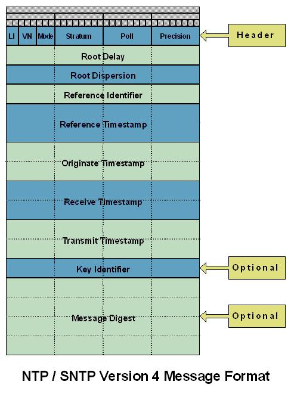

Topic Path: Symbol Reference > Classes > TNTPGram Class
Represents the NTP / SNTP Datagram message format.
TNTPGram = class(TObject);
TNTPGram is a TObject descendant used for processing SNTP requests and responses. TNTPGram represents the data transmitted in UDP packets, and represents the NTP / SNTP Datagram message format as described in the Internet standards document:
RFC 2030 - Simple Network Time Protocol (SNTP) Version 4 for IPv4, IPv6 and OSI
SNTP Version 4 includes certain optional extensions to the basic Version 3 model. TNTPGram does not implement the optional extensions for either Key Identifier or Message Digest portions of the NTP / SNTP message format.

Head1 - Leap Indicator, Version Number, and Mode
Head1 represents byte 1 of 4 bytes in the TNTPGram header. Head1 is utilized to store the values for the Leap Indicator, Version Number, and Mode bit fields as indicated in the diagram.
|
Bits |
Field |
|
0-1 |
Leap Indicator |
|
2-4 |
Version Number |
|
5-7 |
Mode |
Leap Indicator (LI) - Two-bit code warning of an impending leap second to be inserted/deleted in the last minute of the current day, with bit 0 and bit 1, respectively, coded as follows:
|
Value |
Meaning |
|
0 |
no warning |
|
1 |
last minute has 61 seconds |
|
2 |
last minute has 59 seconds) |
|
3 |
alarm condition (clock not synchronized) |
Version Number (VN) - Three-bit integer indicating the NTP/SNTP version number. The version number is 3 for Version 3 (IPv4 only) and 4 for Version 4 (IPv4, IPv6 and OSI). If necessary to distinguish between IPv4, IPv6 and OSI, the encapsulating context must be inspected.
Mode - Three-bit integer indicating the mode, with values defined as follows:
|
Value |
Meaning |
|
0 |
reserved |
|
1 |
symmetric active |
|
2 |
symmetric passive |
|
3 |
client |
|
4 |
server |
|
5 |
broadcast |
|
6 |
reserved for NTP control message |
|
7 |
reserved for private use |
In unicast and anycast modes, the client sets this field to 3 (client) in the request and the server sets it to 4 (server) in the reply. In multicast mode, the server sets this field to 5 (broadcast).
Head2 - Statum level of the local clock
Head2 represents byte 2 of 4 bytes in the TNTPGram header. Head2 is utilized to store the values of Stratum, as indicated in the message diagram.
|
Bits |
Field |
|
0-7 |
Stratum |
Stratum - Eight-bit unsigned integer indicating the stratum level of the local clock, with values defined as follows:
|
Value |
Meaning |
|
0 |
unspecified or unavailable |
|
1 |
primary reference (e.g., radio clock) |
|
2-15 |
secondary reference (via NTP or SNTP) |
|
16-255 |
reserved |
Head3 - Polling Interval
Head3 represents byte 3 of 4 bytes in the TNTPGram header. Head3 is utilized to store the values of Poll, as indicated in the message diagram.
|
Bits |
Field |
|
0-7 |
Poll |
Poll Interval - Eight-bit signed integer indicating the maximum interval between successive messages, in seconds to the nearest power of two. The values that can appear in this field presently range from 4 (16 s) to 14 (16284 s); however, most applications use only the sub-range 6 (64 s) to 10 (1024 s).
Head4 - Precision of the local clock
Head4 represents byte 4 of 4 bytes in the TNTPGram header. Head4 is utilized to store the values of Precision, as indicated in the message diagram.
|
Bits |
Field |
|
0-7 |
Precision |
Precision - Eight-bit signed integer indicating the precision of the local clock, in seconds to the nearest power of two. The values that normally appear in this field range from -6 for mains-frequency clocks to -20 for microsecond clocks found in some workstations.
Org1 - Date portion of the Originate Timestamp.
Org1 is used to store the LongInt value representing the date portion of the Originate Timestamp, as indicated in the message diagram.
If the server is unsynchronized, all timestamp fields are set to zero.
There is some latitude on the part of most clients to forgive invalid timestamps, such as might occur when first coming up or during periods when the primary reference source is inoperative. The most important indicator of an unhealthy server is the LI field in Head1, in which a value of 3 indicates an unsynchronized condition. When this value is displayed, clients should discard the server message, regardless of the contents of other fields.
Org2 - Time portion of the Originate Timestamp
Org2 is used to store the LongInt value representing the time portion of the Originate Timestamp, as indicated in the message diagram.
If the server is unsynchronized, all timestamp fields are set to zero.
There is some latitude on the part of most clients to forgive invalid timestamps, such as might occur when first coming up or during periods when the primary reference source is inoperative. The most important indicator of an unhealthy server is the LI field in Head1, in which a value of 3 indicates an unsynchronized condition. When this value is displayed, clients should discard the server message, regardless of the contents of other fields.
Rcv1 - Date portion of the Receive Timestamp
Rcv1 is used to store the LongInt value representing the date portion of the Receive Timestamp, as indicated in the message diagram.
If the server is unsynchronized, all timestamp fields are set to zero. If synchronized, the Reference Timestamp is set to the time the last update was received from the radio clock or modem.
In unicast and anycast modes, the Receive Timestamp and Transmit Timestamp fields are set to the time of day when the message is sent and the Originate Timestamp field is copied unchanged from the Transmit Timestamp field of the request. It is important that this field be copied intact, as a NTP client uses it to avoid replays. In multicast mode, the Originate Timestamp and Receive Timestamp fields are set to 0 and the Transmit Timestamp field is set to the time of day when the message is sent.
There is some latitude on the part of most clients to forgive invalid timestamps, such as might occur when first coming up or during periods when the primary reference source is inoperative. The most important indicator of an unhealthy server is the LI field in Head1, in which a value of 3 indicates an unsynchronized condition. When this value is displayed, clients should discard the server message, regardless of the contents of other fields.
Rcv2 - Time portion of the Receive Timestamp
Rcv2 is used to store the LongInt value representing the time portion of the Receive Timestamp, as indicated in the message diagram.
If the server is unsynchronized, all timestamp fields are set to zero. If synchronized, the Reference Timestamp is set to the time the last update was received from the radio clock or modem.
In unicast and anycast modes, the Receive Timestamp and Transmit Timestamp fields are set to the time of day when the message is sent and the Originate Timestamp field is copied unchanged from the Transmit Timestamp field of the request. It is important that this field be copied intact, as a NTP client uses it to avoid replays. In multicast mode, the Originate Timestamp and Receive Timestamp fields are set to 0 and the Transmit Timestamp field is set to the time of day when the message is sent.
There is some latitude on the part of most clients to forgive invalid timestamps, such as might occur when first coming up or during periods when the primary reference source is inoperative. The most important indicator of an unhealthy server is the LI field in Head1, in which a value of 3 indicates an unsynchronized condition. When this value is displayed, clients should discard the server message, regardless of the contents of other fields.
Ref1 - Date portion of the Reference Timestamp
Ref1 is used to store the LongInt value representing the date portion of the Reference Timestamp, as indicated in the message diagram.
If the server is unsynchronized, all timestamp fields are set to zero. If synchronized, the Reference Timestamp is set to the time the last update was received from the radio clock or modem.
There is some latitude on the part of most clients to forgive invalid timestamps, such as might occur when first coming up or during periods when the primary reference source is inoperative. The most important indicator of an unhealthy server is the LI field in Head1, in which a value of 3 indicates an unsynchronized condition. When this value is displayed, clients should discard the server message, regardless of the contents of other fields.
Ref2 - Time portion of the Reference Timestamp
Ref2 is used to store the LongInt value representing the time portion of the Reference Timestamp, as indicated in the message diagram.
If the server is unsynchronized, all timestamp fields are set to zero. If synchronized, the Reference Timestamp is set to the time the last update was received from the radio clock or modem.
There is some latitude on the part of most clients to forgive invalid timestamps, such as might occur when first coming up or during periods when the primary reference source is inoperative. The most important indicator of an unhealthy server is the LI field in Head1, in which a value of 3 indicates an unsynchronized condition. When this value is displayed, clients should discard the server message, regardless of the contents of other fields.
RefID - Reference Identifier
RefID is the LongInt value in TNTPGram used to identify the particular reference source, as indicated in the message diagram.
In the case of NTP Version 3 or Version 4 stratum-0 (unspecified) or stratum-1 (primary) servers, this is a four-character ASCII string, left justified and zero padded to 32 bits.
In NTP Version 3 secondary servers, this is the 32-bit IPv4 address of the reference source. In NTP Version 4 secondary servers, this is the low order 32 bits of the latest transmit timestamp of the reference source.
In the case of NTP primary (stratum 1) servers, this field is a code identifying the external reference source according to the following list:
|
Value Meaning |
|
---- -------------------------------------------------------------
|
|
LOCL Uncalibrated local clock used as a primary reference for a subnet without external means of synchronization |
|
PPS Atomic clock or other pulse-per-second source individually calibrated to national standards |
|
ACTS NIST dialup modem service |
|
USNO USNO modem service |
|
PTB PTB (Germany) modem service |
|
TDF Allouis (France) Radio 164 kHz |
|
DCF Mainflingen (Germany) Radio 77.5 kHz |
|
MSF Rugby (UK) Radio 60 kHz |
|
WWV Ft. Collins (US) Radio 2.5, 5, 10, 15, 20 MHz |
|
WWVB Boulder (US) Radio 60 kHz |
|
WWVH Kaui Hawaii (US) Radio 2.5, 5, 10, 15 MHz |
|
CHU Ottawa (Canada) Radio 3330, 7335, 14670 kHz |
|
LORC LORAN-C radionavigation system |
|
OMEG OMEGA radionavigation system |
|
GPS Global Positioning Service |
|
GOES Geostationary Orbit Environment Satellite |
If the external reference is one of those listed, the associated code should be used. Codes for sources not listed can be contrived as appropriate.
RootDelay - Total roundtrip delay to the time server.
RootDelay is the LongInt value in TNTPGram indicating the total roundtrip delay to the primary reference source, in seconds. RootDelay stores fractional seconds after bit 15, as seen in the message diagram.
RootDelay can have both positive and negative values, depending on the relative time and frequency offsets. The values that normally appear in this field range from negative values of a few milliseconds to positive values of several hundred milliseconds.
RootDispersion - Nominal error for the time server
RootDispersion is the LongInt value in TNTPGram that indicates the nominal error relative to the primary reference source. RootDispersion stores fractional seconds after bit 15, as seen in the message diagram.
RootDispersion is measured in seconds, and values normally range from 0 to several hundred milliseconds.
Xmit1 - Date portion of the Transmit Timestamp
Xmit1 is used to store the LongInt value representing the date portion of the Transmit Timestamp, as indicated in the message diagram.
If the server is unsynchronized, all timestamp fields are set to zero. If synchronized, the Reference Timestamp is set to the time the last update was received from the radio clock or modem.
In unicast and anycast modes, the Receive Timestamp and Transmit Timestamp fields are set to the time of day when the message is sent and the Originate Timestamp field is copied unchanged from the Transmit Timestamp field of the request. It is important that this field be copied intact, as a NTP client uses it to avoid replays. In multicast mode, the Originate Timestamp and Receive Timestamp fields are set to 0 and the Transmit Timestamp field is set to the time of day when the message is sent.
There is some latitude on the part of most clients to forgive invalid timestamps, such as might occur when first coming up or during periods when the primary reference source is inoperative. The most important indicator of an unhealthy server is the LI field in Head1, in which a value of 3 indicates an unsynchronized condition. When this value is displayed, clients should discard the server message, regardless of the contents of other fields.
Xmit2- Time portion of the Transmit Timestamp.
Xmit2 is used to store the LongInt value representing the time portion of the Transmit Timestamp, as indicated in the message diagram.
If the server is unsynchronized, all timestamp fields are set to zero. If synchronized, the Reference Timestamp is set to the time the last update was received from the radio clock or modem.
In unicast and anycast modes, the Receive Timestamp and Transmit Timestamp fields are set to the time of day when the message is sent and the Originate Timestamp field is copied unchanged from the Transmit Timestamp field of the request. It is important that this field be copied intact, as a NTP client uses it to avoid replays. In multicast mode, the Originate Timestamp and Receive Timestamp fields are set to 0 and the Transmit Timestamp field is set to the time of day when the message is sent.
There is some latitude on the part of most clients to forgive invalid timestamps, such as might occur when first coming up or during periods when the primary reference source is inoperative. The most important indicator of an unhealthy server is the LI field in Head1, in which a value of 3 indicates an unsynchronized condition. When this value is displayed, clients should discard the server message, regardless of the contents of other fields.
|
Copyright © 1993-2006, Chad Z. Hower (aka Kudzu) and the Indy Pit Crew. All rights reserved.
|
|
Post feedback to the Indy Docs Newsgroup.
|


 Hierarchy
Hierarchy